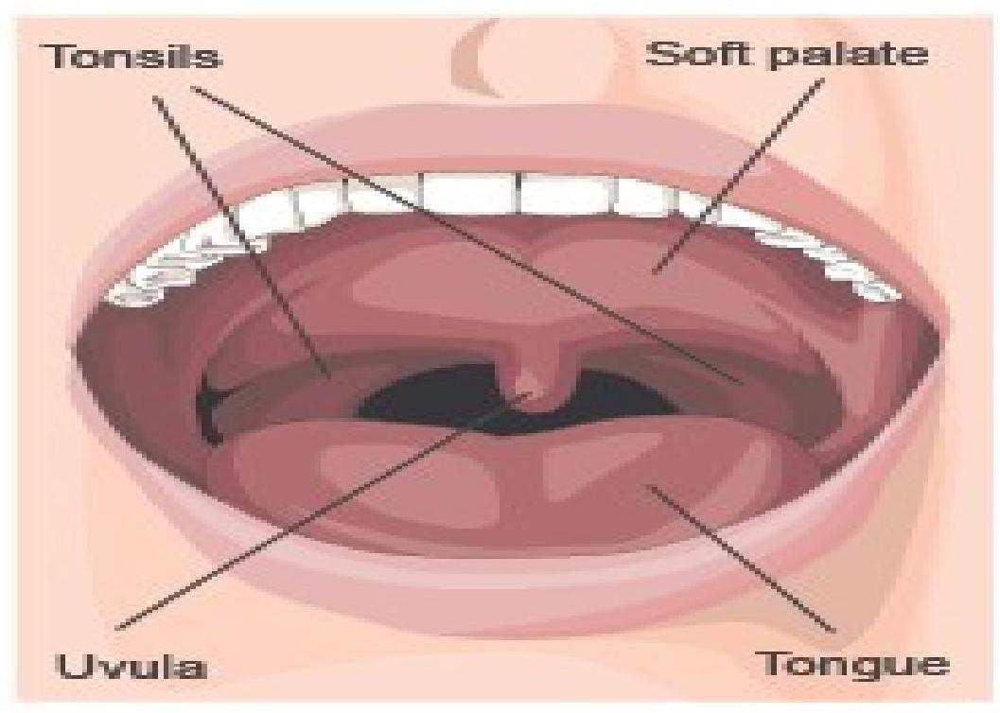

Respiratory Tract Infections
Bronchial Asthma
This is a very common respiratory disease, which affects the tracheo bronchial tree due to hyper reactivity to various stimuli. It is reversible, episodic and results in obstruction of the airway. Although it affects all age groups, it is known to cause chronic respiratory disability in childhood. The onset of childhood asthma normally occurs during the first five years of life. It is more common in boys than girls, but later on, in adolescence, the ratio of boys to girls becomes almost equal. The exact cause of bronchial asthma is unknown but many factors are suspected which can be grouped as intrinsic factors and extrinsic factors. One or more of these factors may trigger the onset of asthmatic attack in any individual.
Intrinsic and Extrinsic Factors
Intrinsic Factors
These refer to some clinical manifestations within the patient, especially those of the airway obstruction. The onset of a bronchial asthmatic attack is triggered by non specific factors. There is no allergic response although a family history of asthma may be present. The triggers to broncho spasm and wheezing may include one or more of the following:
- Viral respiratory infections
- Emotional stress or excitement
- Exercise
- Drugs such as aspirin
- Inhalation of irritating substances such as cigarette smoke, strong perfumes or air pollutants
Extrinsic Factors
The patient may be allergic to certain substances found within the environment. These include inhalation of specific allergens, like house dust, feathers, animal hairs and pollen amongst others. Extrinsic allergies can be detected by performing skin tests using various reagents, which can help to identify the offending substance. A good personal history account may also enable the clinician to associate family allergy to the child's disease.
Pathophysiology
The underlying pathology in asthma is reversible and diffuse airway inflammation. The inflammation leads to obstruction from the following: swelling of the membranes that line the airways (mucosal edema), reducing the airway diameter; contraction of the bronchial smooth muscle that encircles the airways (bronchospasm), causing further narrowing; and increased mucus production, which diminishes airway size and may entirely plug the bronchi. The bronchial muscles and mucus glands enlarge; thick, tenacious sputum is produced; and the alveoli hyperinflate. Cells that play a key role in the inflammation of asthma are mast cells, neutrophils, eosinophils, and lymphocytes. Mast cells, when activated, release several chemicals called mediators. These chemicals, which include histamine, bradykinin, prostaglandins, and leukotrienes, perpetuate the inflammatory response, causing increased blood flow, vasoconstriction, fluid leak from the vasculature, attraction of white blood cells to the area, and bronchoconstriction (NHLBI, 1998).
Clinical Features of an Asthmatic Attack
An asthmatic attack can present in several ways:
- The typical asthmatic attack starts gradually and the patient will notice wheezing and shortness of breath on exertion.
- As the condition progresses, the patient's respiration worsens with the slightest effort, leading to difficulties in expelling the air from the lungs on expiration.
- Dry unproductive cough develops, as mucous secretions cannot drain properly, leading to blockage of the smaller bronchioles. When there is chest infection, there may be mucoid sputum.
- The patient becomes increasingly dyspnoeic and exhausted as he uses accessory muscles of respiration.
- There will be cyanosis and sweating.
- The patient becomes anxious, frightened and tense making the condition worse.
- Pulse and respiratory rates are increased.
Diagnostic Investigations
There is no specific laboratory test for bronchial asthma. However, the following investigations may suffice to confirm the diagnosis. You should be able to accurately take the child's and family history, especially when wheezing is noted in the first instance. History of allergy in the family predisposes asthma in the child. Other information to record should include frequency; duration, severity, and rapidity of past symptomatic onset of attacks. Undertake a thorough physical examination. More often than not, you will find that growth delay is associated with severity of asthma or uncontrolled broncho spasm. You should, therefore, take and record the child's weight and height routinely. During attacks of acute episode, cyanosis and use of accessory muscles of respiration must be noted. Blood from a vein should be taken to the laboratory for a white blood cell count, with specific reference to eosinophil. This tends to be elevated in allergic conditions.
Nursing Care
In order to provide nursing care of children with bronchial asthma, you should have a comprehensive knowledge of the ideal process, medical treatment and expected outcome. During the acute stage of an asthmatic attack, you should aim at assisting the child towards optimum respiratory functioning, growth and social development. You should provide emotional support and education. You need to ensure that the child is on complete bed rest and is correctly positioned, more significantly, sitting upright and well supported at the back with pillows. This is essential in easing the child's breathing. One nurse or the parent/guardian should always stay by the bedside to provide psychological support. Oxygen should be administered continuously at low rate to counter cyanosis. The child may have to be put on intravenous infusion, with or without added medication, and you should monitor their progress as the care continues. Maintain a fluid balance chart to ensure that the child does not become dehydrated from excessive perspiration. A light, nourishing diet with high protein and vitamin content, and oral fluids should be introduced as soon as the condition improves. The parents should be reassured and given the necessary support during the period of hospitalisation as they, too, become frightened for the welfare of their child. The child's personal hygiene should be considered at all times, as they will have been sweating during early stages. This should be done by provision of a bed bath once they are settled.
Medical Management
There are various medications, which may be prescribed for the child with asthma. The most common ones are broncho dilators.
This category includes adrenaline (epinephrine) given as 1:1000 strength, in a dose of 0.01 ml/kg body weight, up to 0.3 ml subcutaneously, for three doses at 20 minute intervals during an acute attack. Aminophyllin (theophyllin) with caution may also be given 1-5 mg/kg body weight by intravenous route, but can alternatively be added into normal saline infusion and the child observed strictly 1/4 hourly.
Steroid Group
These may be prescribed and given to prevent broncho spasms taking place. They include prednisolone or methyprednisolone in a dose of 2 mg/kg body weight intravenously, then 1 mg/kg six hours later for status asthmaticus.
Antibiotics
Broad spectrum antibiotics may be given when there is evidence of respiratory tract infections. A choice can be made from common varieties such as ampicillin syrup. The dose is prescribed according to the age of the child. Your responsibility in drug administration is to ensure they are given on time, in the correct dosage, and to observe for possible side effects.
Tonsillitis
Tonsillitis is normally classified as either acute or chronic.
Acute Tonsillitis
Inflammation of the tonsils is usually an acute infection, which is very common in children, occurring as a result of pharyngitis. It is most frequently caused by haemolytic streptococcus. Although it is a bacterial infection, the bacteria can also cause enlarged tonsils, which may meet in the midline and obstruct the food and air passages. If the adenoids are also involved, they block the posterior nares resulting in mouth breathing. In addition to this, the eustachian tubes may be blocked resulting in otitis media.
Nursing Care
- The patient should be barrier nursed on bed rest in any comfortable position they choose for the first 24 to 48 hours. A throat swab should be taken to the laboratory to confirm the causative organism before drugs are prescribed.
- During the febrile stage, their vital signs should be monitored and recorded two hourly. Bed clothing and personal wear should be reduced and a cradle used to keep the weight off the patient. An electric fan and tepid sponge may be used to lower the fever.
- Oral care should be carried out four hourly using appropriate approved lotions, such as glycothymoline in saline.
- Oral fluid intake is encouraged and should be given slowly in small amounts at a time. Meals should be warm and in liquid form, so that the patient can swallow without discomfort as all attempts should be made to prevent convulsions. Parents should continually be reassured.
- Crystalline penicillin is given intramuscularly in the early stage and then changed to other oral antibiotics.
- Soluble aspirin syrup is given three times a day. The dose of medication should be calculated in relation to the weight of the child.
Chronic Tonsillitis
As one becomes older, the rate of tonsillitis recurrence decreases. Repeated tonsillitis treated medically may require surgical removal due to the fear that peritonsillar abscesses may form (Boat et al, 1983).
Tonsillectomy and Adenoidectomy
It is a common practice that when a decision to remove tonsils has been taken, adenoids must also be removed at the same time. The operation is rarely performed on children under the age of three years unless they have developed airway obstruction.
Preoperative Care
- The child and a parent are admitted a day before surgery so that they may get used to the ward environment and to the nurses and so that the child may be fully examined.
- The operation should be clearly explained to the parents.
- The baseline observations of temperature, pulse and respiration are recorded four hourly.
- Any abnormalities noted should be reported to the attending physician.
- A consent form should then be signed by the parents/guardians. A routine urinalysis should be carried out. Mouthwashes should continue to be given up until the morning of the operation.
Postoperative Care
- The child should be placed in a semi prone position, with the head slightly low to facilitate drainage of respiratory secretions until fully conscious. You should observe and report any bleeding from the tonsillar bed, which may be suspected should you see the child repeatedly swallowing. Any vomiting must also be reported to the surgeon.
- Vital signs should be recorded one hourly initially, but later every two to four hours, as the patient's condition improves.
- You should pay attention to the patient's breathing.
- Oral fluids should be given as soon as they are able to swallow, but this should only be in small amounts at a time. Fluids may consist of cold drinks such as fruit juice.
- Ice cream is also recommended for its soothing and cooling properties. A mild analgesic, such as aspirin or paracetamol for pain relief, may be given, especially before feeds. Antibiotics are also prescribed. The child may get out of bed the following day, and return home on the second day after operation.
Acute Otitis Media
Definition and Etiology
Acute otitis media is an infection of the middle ear, usually lasting less than 6 weeks. The pathogens that cause acute otitis media is streptococcus pneumonia, haemophilus influenza and moraxella catarrhalis, which enter the middle ear after the Eustachian tube dysfunction caused by obstruction related to upper respiratory infections, inflammation of surrounding structures eg (rhinosinustis, adenoid atrophy), or allergic reactions eg(allergic rhinitis). Bacteria can enter Eustachian tube from contaminated secretions in the nasopharynx and the middle ear from a tympanic membrane perforation. A purulent exudates is usually present in the ear ,resulting in conductive hearing loss.
Pathophysiology
- A child below 3 years is more vulnerable to OM because they have eustachian tubes that are wider, shorter, straighter than those of older children & adults.
- Also eustachian tubes are horizontally positioned. Hence; these anatomical features allow micro organisms & nasopharngeal secretions easy access to the middle ear. This leads to inflammation with/without infection.
- Exudates/ fluids are produced and impede middle ear's ability to transmit sound. Enlarged lymphoid tissue may obstruct flow of drainage from middle ear; pressure in the middle ear increases and rupture of the tympanic membrane may occur.
Clinical manifestations
Children who are verbal will express pain. Non-verbal/ preverbal children will express pain by tugging/pulling ear. Others include: fever, diarrhea, irritability, vomiting, URTI may be present. If conductive hearing impairment is present, child is attentive to voices/ noises.
Diagnostic evaluation
Otoscopic exam in the ear AOM shows tympanic membrane as red and bulging. Serous/ purulent fluid visible behind tympanic membrane. May be absent with chronic OM. Culture with sensitivity testing is conducted if drainage in the external canal is present so that to institute appropriate antibiotic therapy identified.
Therapeutic management
- For Acute OM - antibiotics eg amoxil, cefaclor, cotrimoxazole (Bactrim) for 5-10days. If poor compliance expected, give single dose of IM ceftriaxone (Rocephin).
- Response within 2-3 days but effusion (serous fluid) takes months/weeks to clear.
- There are possible complications: conductive hearing loss & related speech problem; abscess formation in the tissues adjacent to the middle ear, meningitis and septicemia.
- Follow-up for 2 to 4 weeks or earlier depending on the state is important.
- Recurrent OM i.e episodes occurring within 6 months need prophylactic antibiotic treatment, treat URTI early and influenza/ pneumoccal immunizations.
- Tympanostomy (surgical incision in the tympanic membrane to drain fluid) is indicated if an episode of OM with effusion lasts longer than 3-4 months & is associated with loss of at least 20 decibels. Ear plugs used when swimming to prevent water entry. Family education includes avoiding second hand smoke as it irritates the eustachian tube; avoiding horizontal position during bottle feeding and adequate breast feeding.
Laryngo-Tracheo Bronchitis / Croup
This is a combined disease process, which affects the larynx, trachea and bronchi simultaneously. Infections of the respiratory tract are generally not limited to one anatomical area in small children, but affect other areas as well because of the close proximity.
Etiology
Acute infections of the larynx and trachea are more frequent in toddlers than in older children and are considered more serious because young children have relatively smaller airways, which become easily obstructed when inflammation occurs. The inflammation of the larynx and trachea are collectively called croup syndrome, which involves acute epiglottis, acute laryngitis and acute laryngotracheobronchitis.
Pathophysiology
In acute-tracheo bronchitis, the onset is gradual. It occurs more frequently in the course of a viral upper respiratory tract illness. Sevral virus can cause croup but mostly the parainfluenza virus. When it occurs, it may increase in severity within a 24-hour period. Maximum airway obstruction occurs below the vocal cords. As mentioned above, young children have smaller and shorter airways. It is also worth noting that the smooth muscle in the lower respiratory tract still lacks cartilaginous support because this does not develop until adolecence. It follows, therefore, that, when infected, there is constriction of the lower airway prompting an increased volume of respiratory secrections. These are the sources of obstruction, which eventually interfere with exchange of gases.
Clinical features
- He/she may have harsh voice, barking or brassy cough
- Inspiratory rate gradually increases but expiratory rate may sometimes increase as an alternative. This is refered to as a stridor;
- The child is pyrexial with a temprature of 39 degrees to 40 degrees celsus;
- Tachycardia is present as the infection spreads downwards to the bronchi and brochioles moderate. There is persistent airway obsruction with dysnoea where the patient uses accessory muscles of respirations.
- Cyanosis, restlessness and anxiety are always present. The patient gradually looks pale.
Nursing care
The child with laryngo-tracheo bronchitis should be hospitalised and placed in the intensive care in a separate room or cubicle. He/ she should be barrier nursed on bed rest until his/her condition improves. Once the child has been admitted, care must be taken to ensure the cubicle or room is well ventileted, quiet and clean. Only a few visitors or carers should be allowed in the room. They should use all the facilities available for barrier nursing.
You, as the nurse, should constantly be vigilant of the patient's condition by taking and recording his vital signs, particular emphasis being laid on his respiratory pattern. This is necessary because, should the condition worsen, he/she may be unable to breathe properly and mechanical methods to sustain life will have to be used. These may either be tracheotomy or endotracheal intubation.
You should, therefore, urgently report any complications to the doctor as soon as they occur. These complications may include actual or suspected epiglottitis, respiratory distress characterised by progressive stridor, restlessness, rapid pulse rate, hypoxia, cyanosis or pallor or hyperpyrexia in a child who appears toxic.
While the child remains ill, a nasogastric tube is passed for feeding purposes while intravenous infusion remains in progress. The fluid balance chart should be maintained, paying attention to urinary output. The child's vital signs of temperature, pulse and respiration are recorded two to four hourly. Humidified oxygen therapy is given, while respiratory suction is carried out, both whenever necessary.
The position is changed two hourly but try to allow the child to assume the position he/she is most comfortable with provided the airway is clear. Treat pressure areas four hourly. General hygiene, including frequent oral toileting, should be maintained on a daily basis. As the condition improves, most gadgets are removed and patients are mobilised first in bed and gradually out of bed.
If croup is bacterial the child may be prescribed antibiotics, which may have to be administered by injection initially. These may include ampicillin or chloramphenicol. Other broad-spectrum antibiotics may also be considered singly or in combination. Corticosteroid e.g dexamethasone or prednisolone can be administered to reduce swelling in the throat.
Streptococcal Sore Throat
This is a condition caused by a strain of beta haemolytic streptococci. It is classified as a communicable disease of the respiratory tract. The infection can spread from one child to another either by droplets and direct or indirect contact. It has an incubation period of two to five days. After the Beta-Haemolytic streptococci have invaded the throat, their toxin from the site of infection are absorbed into the bloodstream. Unless the treatment is effectively admnistered early enough, the said toxins cause complications, which may affect other body organs and structures.
Clinical manifestations
- Fever. Rapid pulse rate and cough, following throat infection;
- There is cellulitis of the throat, which may include the pharynx;
- Headache and dysphagia, delirius and restless.
- Vomiting and thirst ,lymphadenitis,
- The tongue is reddish strawberry-like color and has a white coating on the surface.
Nursing care
- Nurse in an isolated room, quiet and with fresh air.
- Administer humidified oxygen.
- Plenty of fluid should be encouraged but if there is dysphagia one should give an intravenous infusion of 5% dextrose alternating with normal saline.
- A fluid chart should be maintained.
- Vital signs should be recorded 2 hourly. Vomiting should be similarly observed and recorded.
- Cold and heat application to the painful cervical nodes is recommended.
- The patients personal hygiene should be taken care of especially oral care.
- Most importantly antibiotics given promptly to avoid complications of the illness.
Complications of streptococcal sore throat
- Otitis media
- Mastoiditis
- Meningitis
- Anaemia due to hemolysis.
- Rheumatic heart disease.(is autoimmune.)
- Renal problems (acute nephritis).(is autoimmune)
- Electrolyte imbalance
- Pneumonia, peripheral circulatory collape.
- Abscess formation
Bronchitis
Is an acute inflammation of one or more bronchi in children, which affects those below the age of four years. The infection is more prevalent in the younger children than the older ones because the former group have low resistance. Although referred to as bronchitis, the trachea, which is anatomically and physiologically related to the bronchi, cannot escape infection when the latter is involved. In some cases, it is associated with certain communicable or infectious diseases such as whooping cough, measles and typhoid fever, just to name a few.
Etiology
- Acute bronchitis may present itself as a mild or severe manifestation.
- It frequently attacks malnourished and debilitated children from overcrowded homes.
- Environmental air pollution, allergic conditions and climatic changes, especially cold months and housing may precipitate the condition.
- the disease is always associated with the upper respiratory tract infections, caused by various types of micro-organisms such as the influenza virus, streptococci, and pneumococci, parainfluenza, adenovirus, rhinovirus, moraxella catarrhalis . Exposure to irritants such as pollution, chemicals,and tobacco smoke.
- Some young children with congenital heart defects or fibrocystic disease of the pancreas also tend to develop acute bronchitis due to their low immunity.
Clinical manifestation
- generally week unwell.
- Their cheeks and skin may be flushed and their mouth may be dry
- Have dyspnoea leading to restlessness and irritability
- On checking the vital signs, the child will be pyrexial with temperature running between 39 and 40 degrees Celsius, in some cases even above these figures
- The respiration, though increased, is usually shallow due to pleural pain .
- Older children normally complain of anterior chest pain, which may increase with frequent coughing at first
- Later on, the cough may become productive and the patient will be exhausted as a result of the above symptoms.
- Nausea, vomiting and diarrhoea.
Pathophysiology
During an episode of bronchitis, the cells of the bronchial-lining tissue are irritated and the mucous membranes becomes hyperemic and edemaatous, diminishing bronchial mucociliary function. Consequently, the air passages becomes clogged by debris and irritation increases. In response, copious secretions of mucus developes, which causes the characteristic cough of bronchitis.
Chronic bronchitis is associated with excessive tracheobrochial mucus production sufficient to cause cough with expectoration for 3 or more months a year for atleast 2 consecutive years. The alveolar epithelim is both the target and the initiator of inflammation in chronic bronchitis.
Management
- Central cough suppresants (e.g, codeine and dextromethorphan)
- Bronchodilators (eg ipratropium bromide and theophylline)- control of bronchospasm, dysnea, and chronic cough in stable patients with chronic bronchitis; a long acting beta-agonist plus an inhaled corticosteroid can also be offered to control chronic cough.
- NSAIDs for pain.
- Mucolytics- management of moderate to severe COPD especially in winter.
- Give antibiotics if required especially in acute exacerbations of chronic bronchitis.